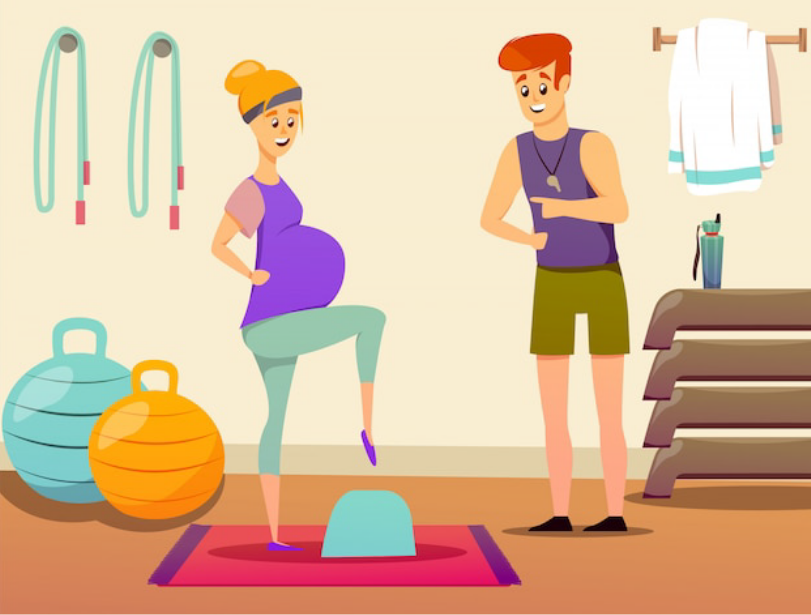

Aula 3
As práticas baseadas em evidências científicas e a realidade
brasileira (parte 3)
Introdução
O período expulsivo é o segundo período do trabalho de parto. Ele se inicia com a dilatação completa do colo uterino (10 cm) e é caracterizado pela expulsão do corpo fetal do claustro materno, completando o nascimento. Esse período do parto possui relação direta com a contratilidade uterina e duração variável influenciada por fatores como paridade, analgesia e posição materna.
O terceiro período do parto é caracterizado pelo desprendimento e expulsão da placenta (dequitação). Esse momento também exige assistência adequada, com ênfase na prevenção de hemorragia pós-parto (HPP), monitorização e vigilância materna e neonatal, entre outras recomendações (ex.: educação e oferta de contracepção).
Nesta aula iremos detalhar os principais aspectos e condutas relacionados a esses períodos do parto.
Assistência ao segundo período
Conforme você viu nas aulas anteriores, as curvas de dilatação de Zhang reformularam a compreensão do trabalho de parto e modificaram os parâmetros para a Pré-natal de Qualidade e o partograma. Ao reavaliar as curvas de parto das nulíparas ficou evidente que, no segundo período, também conhecido como período expulsivo, a descida do polo cefálico do plano +1 de De Lee para o +2 pode durar até três horas, com tempo adicional de 30’ até a expulsão.
Gestante no segundo período do trabalho de parto

Sendo assim, o ponto de corte para a descida da apresentação é atualmente considerado como sendo de 7 cm e, ao contrário do que antes era reportado, a insinuação irá ocorrer predominantemente no final do período de dilatação, mesmo entre as primigestas.
> Duração do segundo período
A redefinição da fisiologia do parto a partir dos estudos de Zhang incluiu o estabelecimento de novos critérios de normalidade para o tempo do período expulsivo (pélvico). Sumário e Consenso de Cuidados Obstétricos do Colégio Americano de Obstetras e Ginecologistas (ACOG) e da Sociedade de Medicina Materno Fetal publicados em 2012 e 2014 afirmaram ainda não haver tempo máximo estabelecido para o período pélvico a fim de indicar parto vaginal operatório.
Foram estabelecidos tempos de período pélvico prolongado de ≥ 3h para as nulíparas e ≥ 2h para as multíparas, ressaltado que são aceitas durações mais longas individualizadas diante de analgesia e variedades de posição desfavoráveis (posteriores e transversas). Essas alterações foram reafirmadas e redefinidas de acordo com a realização ou não de analgesia epidural. Estão estabelecidos, respectivamente, os tempos de 3 e 4 horas, sem e com analgesia epidural, como critérios de segundo estágio prolongado para as nulíparas. Para as multíparas esses tempos foram estabelecidos como de 2 e 3 horas. Integrando essas redefinições, e no contexto da tocurgia, estabelece-se ainda como recomendações de condutas: avaliação adequada da apresentação, parto vaginal operatório como alternativa à cesariana e rotação manual como alternativa ao parto vaginal operatório e à cesariana.
Posições maternas no segundo período
Em 2002 foi publicado um estudo que avaliou a pelvimetria obstétrica por ressonância nuclear magnética em posições verticais, revelando achados que contribuíram para o estabelecimento de um novo paradigma na adoção de posições maternas no nascimento.
Investigando principalmente as posições de cócoras e de quatro apoios (posição inglesa, posição de Gaskin), os resultados demonstraram aumento dos diâmetros interespinhoso, intertuberoso e cocci-subpúbico dessas posições verticais em relação à posição supina. Os diâmetros transversos permanecem sem alterações nessas posturas. Apenas a conjugata vera obstétrica é menor na posição de cócoras do que na posição supina (p=0,01). O estudo concluiu que as posições verticais expandem significativamente as dimensões ósseas pélvicas, sugerindo facilitação ao trabalho de parto e nascimento.
Em 2013, uma revisão da Cochrane sobre posição no segundo estágio do trabalho de parto para mulheres sem anestesia epidural compilou dados de 7.280 parturientes provenientes de 22 ensaios clínicos randomizados (ECR) e quasi-randomizados. Comparadas à posição supina, qualquer posição vertical demonstrou encurtamento do segundo estágio, menor taxa de partos vaginais instrumentados (OR 0.78, IC 0.68-0.90), redução na realização de episiotomias (OR 0.79, IC 0.70-0.90) e redução dos padrões anormais de frequência cardíaca fetal (FCF) (OR 0.46, IC 0.22-0.93). Não ocorreram diferenças nas taxas de lacerações perineais de 3° e 4°graus (0.58, IC 0.22-1.52). Foram observadas elevações nas taxas de lacerações perineais de 2°grau (OR 1.35, IC 1.20-1.51) e de sangramento superior a 500 ml (OR 1.65, IC 1.32-2.06). O encontro de maior taxa de sangramento superior a 500 ml nas posições verticais foi atribuído à maior velocidade do fluxo sanguíneo uterino nas posições verticais, interferindo nas volumetrias de avaliação. Também foi observado que o aumento nas taxas de lacerações perineais de 2° grau nas posições verticais não parece ser prejudicial, uma vez que, nessas posturas, predominam as lesões nos compartimentos anteriores do vestíbulo e períneo (lacerações periuretrais, em clitóris etc.).
O estudo da ergonomia do parto revela a heterogeneidade de opções, com diversas especificidades relacionadas aos benefícios de cada posição no processo de parturição. Veja com mais detalhes algumas dessas posições.

Parturiente na posição cócoras
Nas posições que promovem hiperflexão do quadril
(cócoras, posição supina ótima), a flexão
exagerada das coxas contra o abdome e das pernas
sobre as coxas propiciam melhora do ângulo de
encaixe (drive angle) e menor pressão
intravaginal, aspectos que explicam o encurtamento
do segundo estágio nessas posições.

Parturiente na posição decúbito lateral
esquerdo
O decúbito lateral esquerdo, também denominado
posição francesa ou de Sims, é facilmente
aplicável, evita a síndrome da hipotensão supina,
sendo indicada para parturientes cardiopatas,
portadoras de varizes em membros inferiores, de
restrição na articulação sacroilíaca e diante de
estado fetal não tranquilizador. Em decorrência da
descompressão da veia cava, a posição propicia
melhora do retorno venoso, do débito cardíaco
materno, da circulação materna sistêmica, do fluxo
sanguíneo uteroplacentário e da oxigenação fetal.

Parturiente na posição Gaskin
A posição de quatro apoios (Gaskin, posição
inglesa) apresenta como benefícios facilitação da
rotação espontânea nas variedades posteriores e
redução do trauma perineal. A redução do trauma
perineal é explicada pelo fato de, nessa posição,
o períneo materno ficar posicionado superiormente
ao polo cefálico fetal em deflexão. Essa posição
também oferece o benefício gravitacional das
posições verticais, por meio de maior curvatura
pélvica, tendo se mostrado vantajosa para os
partos das apresentações pélvicas e de fetos
grandes, reduzindo o risco de distocia de ombro.

Parturiente na posição McRoberts
A posição supina ótima (McRoberts) é uma posição
de parto supina biomecanicamente otimizada. A
hiperflexão das coxas parece aproximar-se das
características biomecânicas da posição de cócoras
com os pés planos. De todas as posições, a posição
supina hiperfletida, com correção da lordose, é a
que parece deslocar a coluna mais próxima do eixo
perpendicular do estreito superior. Também é uma
posição que propicia conforto, principalmente
diante de exaustão materna.
Os benefícios de todas essas posições ao processo de parturição são os pilares que sustentam a atual orientação de liberdade de posição durante o trabalho de parto, e em particular no período expulsivo. Cabe às equipes assistenciais fornecerem às parturientes e a seus acompanhantes orientações quanto às especificidades de cada posição, assim como propiciar ambiência e condições para a adoção delas.
Práticas utilizadas no segundo período
Agora, vamos falar sobre algumas práticas utilizadas durante o segundo período do parto.
> Episiotomia
A episiotomia foi uma prática rotineira na Pré-natal de Qualidade hospitalar, sendo um dos procedimentos cuja evidência científica alterou suas recomendações na “virada” do século XX.
Na atualidade, é consenso que as episiotomias não devem ser rotineiras em nenhuma circunstância da Pré-natal de Qualidade. As indicações atuais de episiotomia (seletiva) se restringem ao parto vaginal complicado (parto pélvico, distocia de ombro, parto com fórceps, extração a vácuo), em situações de alto risco de lacerações perineais graves, presença de cicatrizes na genitália ou de lacerações perineais mal curadas, distocias importantes de tecido mole e estado fetal não tranquilizador. A taxa recomendada pela Organização Mundial de Saúde (OMS) é de 10%. Episiotomias medianas devem ser proscritas. Quando indicadas, recomenda-se episiotomia mediolateral, realizada com ângulo entre 30° e 60°.
Na próxima aula abordaremos detalhadamente este tema, episiotomia e trauma perineal serão os assuntos centrais.
> Puxos
A orientação para execução materna de puxos (puxos voluntários) é rotineira por parte das equipes assistenciais. Uma revisão sistemática de ECR comparou os efeitos dos puxos espontâneos (involuntários) aos da manobra de Valsalva (puxos voluntários) nas mães e fetos durante o período expulsivo. Veja os resultados comparativos.
PUXOS VOLUNTÁRIOS (MANOBRA DE VALSALVA)
Não ocasionaram melhorias na duração da expulsão fetal, na taxa de parto vaginal operatório, no pH arterial neonatal < 7,20, e nem no índice de Apgar < 7 no 5’. Em um dos estudos também houve efeitos negativos sobre fatores urodinâmicos. Foi concluído que as evidências não suportam o uso de rotina dessa manobra durante o segundo período do trabalho de parto.

PUXOS INVOLUNTÁRIOS
Após estudos, fica sugerido o encorajamento do puxo espontâneo e a escolha da parturiente sobre seu próprio método de puxo, que parece ser a melhor prática durante o segundo período do trabalho de parto.
> Aspiração oronasofaríngea neonatal
A aspiração oronasofaríngea rotineira dos neonatos é outra prática sem benefícios comprovados. As evidências apontam que essa prática não é benéfica para os neonatos a termo. Sua indicação deve se restringir a casos de obstrução aérea por secreção ou para recém-natos que necessitam de ventilação por pressão positiva (VPP). Quando necessária, deve-se primeiro aspirar a boca e depois as narinas, reduzindo as probabilidades de aspiração. Não se deve aspirar a faringe posterior, evitando apneia e bradicardia por reflexo vagal. Ressalta-se que um ECR (2005) não encontrou diferença entre limpar a face, boca e nariz com compressa ou aspirar com pera.
> Contato pele a pele
O contato pele a pele precoce é o ato de colocar o neonato nu diretamente sobre o peito nu da sua mãe. A hipótese é que o procedimento promove a liberação de ocitocina endógena materna e favorece os comportamentos de sobrevivência neonatal. O contato pele a pele (também chamado de cuidado canguru) tem sido estudado principalmente no contexto dos resultados da amamentação. Na ausência de complicações maternas ou neonatais, a recomendação é que os recém-natos a termo saudáveis devem ser secos para minimizar a perda de calor e entregues às suas mães.
Mãe e neonato em contato pele a pele

O contato pele a pele ajuda a estabilizar os parâmetros fisiológicos neonatais, promovendo amamentação exclusiva e apoiando o vínculo materno-infantil. Também pode ser realizado com os neonatos prematuros na sala de parto e durante a hospitalização, desde que as condições clínicas não o contraindiquem. As posições do neonato em relação do nível da placenta (acima ou abaixo) e o período de não clampeamento do cordão umbilical não devem influenciar a decisão pelo contato pele a pele.
Uma metanálise Cochrane (2016) de 38 ECR que incluiu 3.472 participantes revelou que o contato pele a pele precoce entre mães e seus recém-nascidos saudáveis propiciou aumento de alguns fatores como:
- Lactação exclusiva com leite materno no primeiro mês após o parto (83,5% versus 64,2%; razão de risco [RR] 1,30; IC 95% 1,12-1,49).
- Amamentação com leite materno aos quatro meses (RR 1,24; IC 95% 1,07-1,43).
-
Pontuação SCRIP (estabilidade do sistema cardiorrespiratório em prematuros) durante as primeiras seis horas após o nascimento, sugerindo melhor transição para a vida extrauterina (diferença média padronizada de 1,24; IC 95% 0,76-1,72).
Vale lembrar que o início precoce da amamentação (dentro da primeira hora após o nascimento) e a lactação exclusiva com leite materno durante o primeiro mês de vida são comprovadamente benéficos para a redução de morbidade e de mortalidade neonatal.
> Clampeamento do cordão umbilical
Localização do clampeamento do cordão umbilical
O cordão umbilical é rotineiramente clampado de 2 a 3 centímetros (0,8 a 1,2 polegadas) do umbigo, embora a distância ideal não tenha sido bem estudada. Na suspeita de anormalidades no local de inserção do cordão, é prudente aumentar essa distância para evitar a possibilidade de clampeamento do intestino herniado em uma onfalocele, ou hérnia umbilical.
Tempo de clampeamento do cordão umbilical
Veja quais as diferenças entre os tempos de clampeamento do cordão umbilical.
O clampeamento é realizado imediatamente após a expulsão fetal. Seus principais benefícios são: atenção rapidamente voltada para a estabilização da puérpera e/ou ressuscitação do neonato, quando necessário, e a tração controlada do cordão poder ser prontamente aplicada.
Alternativa definida como o atraso do clampeamento do cordão em pelo menos 60 segundos após a expulsão fetal, ou quando ocorrer a cessação da pulsação. O clampeamento tardio do cordão permite fluxo sanguíneo adicional para o neonato, constituindo até 20% a 30% de seu volume sanguíneo final. Não há dados suficientes para recomendar qualquer posicionamento específico do neonato em relação à mãe (acima ou abaixo da placenta) para otimizar o fluxo sanguíneo durante o clampeamento tardio do cordão. Portanto, as preocupações sobre o volume da transfusão não devem influenciar a decisão de colocar o recém-nascido no abdome da mãe enquanto o cordão não está clampado.
A prática do clampeamento tardio pode ser vantajosa quando a mãe apresenta nível baixo de ferritina ou planeja amamentar sem suplementação de ferro ou fórmula fortificada. Além disso, a deficiência de ferro tem sido associada a comprometimento do neurodesenvolvimento infantil.
Uma metanálise de 15 ECR da Cochrane (2013), envolvendo 3.911 gestações a termo, comparou o clampeamento tardio (dois a três minutos após o nascimento). com o clampeamento precoce do cordão umbilical. O clampeamento tardio resultou em:
- Níveis mais elevados de hemoglobina neonatal entre 24 e 48 horas após o nasci-mento (diferença média de 1,49 g/ dL, IC 95%: 1,21-1,78; 2 ECR, 884 neonatos).
- Menor proporção de infantes com deficiência de ferro entre três e seis meses de idade (8% X 14%; razão de risco [RR] 0,37, IC 95%: 0,15-0,96; 5 ECR, 1152 infantes).
-
Aumento de 60% em recém-nascidos que necessitaram de fototerapia para icterícia (4,36% X 2,74%; RR 1,61, IC 95%: 1,04-2,44; 7 ECR, 2324 neonatos).
Não houve diferenças entre o clampeamento precoce e tardio do cordão com relação aos desfechos primários de mortalidade neonatal (RR 0,37; IC 95%: 0,04–3,41) e perda sanguínea pós-parto ≥ 500 mL (RR 1,17; IC 95%: 0,94-1,44) ou ≥ 1000 mL (RR 1,04; IC 95%: 0,65-1,65). O clampeamento precoce do cordão está associado à redução da necessidade de fototerapia devido a hiperbilirrubinemia (RR 0,62; IC 95%: 0,41-0,96), risco que deve ser equilibrado com os benefícios do clampeamento tardio. A qualidade dos estudos incluídos nessa metanálise foi de moderada a alta.
Em neonatos prematuros, uma metanálise de ECR da Cochrane (2012) comparando clampeamento tardio (> 30 segundos) com precoce do cordão umbilical em 739 neonatos encontrou:
- Redução na taxa de hemotransfusão (RR = 0,61; 0,46-0,81).
- Menor risco de enterocolite necrotizante (RR = 0,62; 0,43-0,90).
- Menor taxa de hemorragia intraventricular (RR = 0,59; 0,41-0,85).
- Os níveis de bilirrubina foram maiores, porém sem diferença para tratamento de icterícia.
-
Facilitação da transição fisiológica da vida fetal para a vida neonatal (hemodinâmica cardiovascular).
O clampeamento tardio do cordão umbilical não traz benefícios ou danos maternos. A perda de sangue materno e a frequência de HPP não aumentam em comparação com o clampeamento precoce em pacientes submetidas a cesárea ou parto vaginal. Portanto, ao se considerar intervenções que afetam a HPP em mulheres, o clampeamento imediato do cordão umbilical não contribui para a prevenção desse risco.
Além do aumento do risco de hiperbilirrubinemia, as principais desvantagens do clampeamento tardio do cordão umbilical incluem:
- Redução na taxa de hemotransfusão (RR = 0,61; 0,46-0,81).
- Aumento do risco de policitemia em recém-nascidos pequenos para a idade gestacional.
- Volume reduzido de sangue do cordão umbilical disponível para coleta de células-tronco.
Clique aqui e saiba mais sobre volume de sangue do cordão umbilical no clampeamento tardio.
Embora o tempo ideal para o clampeamento do cordão umbilical não tenha sido estabelecido, existem algumas recomendações. Veja a seguir:
O ACOG e a Academia Americana de Pediatria (AAP) recomendaram um atraso de pelo menos 30 a 60 segundos no clampeamento do cordão umbilical.
O Consenso Internacional de 2021 sobre Ressuscitação Cardiopulmonar e Cuidados Cardiovasculares de Emergência recomendou o clampeamento tardio do cordão por pelo menos 60 segundos para recém-nascidos ≥ 34 semanas que não requerem ressuscitação imediata.
Uma diretriz da Sociedade de Obstetras e Ginecologistas do Canadá e da Sociedade Pediátrica Canadense recomendou 60 segundos para recém-nascidos a termo. Outros sugeriram um atraso de dois a cinco minutos (ou mais, se a mãe solicitar). No entanto, os benefícios de um atraso prolongado não são evidentes, uma vez que aproximadamente 75% do sangue disponível para transfusão da placenta ao neonato ocorre no primeiro minuto após o nascimento.
O atraso no clampeamento do cordão umbilical não deve interferir no cuidado oportuno do recém-nascido e da mãe em situações de urgência/emergência, tais como instabilidade hemodinâmica materna, depressão respiratória neonatal, descolamento placentário, avulsão do cordão umbilical, dentre outros.
A gravidez gemelar monocoriônica também é uma contraindicação para clampeamento tardio do cordão umbilical porque pode ocorrer transfusão sanguínea entre os gêmeos de forma aguda e a direção da transfusão é imprevisível.
Apesar da falta de consenso na literatura, o clampeamento do cordão umbilical também pode não ser adequado em casos de restrição do crescimento fetal com Doppler alterado da artéria umbilical, pois esses recém-nascidos já podem ter policitemia e hiperviscosidade sanguínea. O efeito da anestesia geral em cesárea nos resultados do clampeamento tardio do cordão umbilical não foi avaliado por nenhum ECR ou metanálise. Portanto, o clampeamento tardio do cordão umbilical não está contraindicado nessa situação, tanto para neonatos a termo quanto para prematuros, desde que estejam vigorosos.
Clampeamento fisiológico do cordão umbilical
O clampeamento fisiológico do cordão é uma forma de clampeamento tardio, quando o momento de clampear o cordão é baseado em parâmetros fisiológicos, como o início das respirações e a cessação das pulsações do cordão, em vez de em um ponto de tempo fixo.
O cordão geralmente permanece sem clampeamento por um período maior com o clampeamento fisiológico em comparação ao clampeamento tardio não fisiológico (três a cinco minutos versus 30 a 60 segundos). Entretanto, os ECR realizados não demonstraram benefícios com essa prática.
> Drenagem do cordão umbilical
Outra estratégia que também já foi avaliada após o parto vaginal é a drenagem do cordão umbilical. Nessa condição, o local onde o cordão foi previamente clampeado e cortado é desbloqueado, retirando-se a pinça e permitindo que o sangue drene do cordão umbilical e da placenta.
Estudos prévios aventaram um benefício potencial do procedimento para redução da perda sanguínea materna. Porém, o clampeamento precoce havia sido adotado na maioria dos estudos. Um ECR mais recente avaliando a drenagem do cordão umbilical associada ao seu clampeamento tardio não encontrou nenhum benefício. A drenagem do cordão umbilical não reduziu a incidência de HPP ou de retenção placentária.
> Ordenha do cordão umbilical
A ordenha do cordão umbilical é uma prática alternativa ao clampeamento tardio que também visa melhorar a transfusão de sangue para o neonato. O cordão umbilical é manualmente apreendido e comprimido, sendo o sangue empurrado por ordenha em direção ao neonato.
Entre neonatos a termo, os estudos não mostraram nenhum benefício da ordenha em relação ao clampeamento tardio, quando comparados ao clampeamento precoce. Portanto, o clampeamento do cordão umbilical não deve ser desnecessariamente adiado para ordenhar o cordão em situações em que seja necessária assistência pediátrica imediata, tais como mecônio espesso ou depressão neonatal.
Os dados relacionados à ordenha do cordão umbilical entre neonatos prematuros são escassos. Um ECR em neonatos prematuros revelou que ordenhar o comprimento acessível do cordão umbilical quatro vezes a uma velocidade de 10 cm/segundo equivale a atrasar o clampeamento do cordão por 30 segundos.
O risco maior de hemorragia intraventricular entre neonatos prematuros extremos submetidos a ordenha de cordão foi debatido, porém não confirmado por uma metanálise. Em suas diretrizes de ressuscitação neonatal, a American Heart Association (2023) e a American Academy of Pediatrics (2023) emitem recomendação contrária à ordenha do cordão umbilical de recém-nascidos com menos de 28 semanas, alegando uma provável elevação no risco de hemorragia intraventricular grave.
> Coleta de sangue do cordão umbilical
A coleta de sangue do cordão umbilical é realizada por alguns motivos. Veja a seguir os principais.

O sangue do cordão umbilical coletado para fins diagnósticos é geralmente obtido permitindo-se que o sangue flua da extremidade cortada para um tubo de coleta, preferencialmente antes da dequitação.

Habitualmente indicado diante do estado fetal não tranquilizador e/ou hipóxia com reanimação neonatal. Nessa situação, o sangue fetal deve ser coletado de uma artéria umbilical usando-se uma agulha e seringa, minimizando a exposição ao ar e evitando a mistura de sangue venoso ao arterial. O teste também é indicado diante da suspeita de anormalidade metabólica fetal, e os critérios mais utilizados são índice de Apgar 5’ entre 0 e 3, padrão de frequência cardíaca fetal de categoria III na cardiotocografia, parto vaginal operatório (vácuo extrator, fórceps) realizado por estado fetal não tranquilizador, cesárea de emergência etc.

A coleta de sangue do cordão umbilical para banco pode ser realizada com uma agulha e seringa, antes ou após a expulsão da placenta. Como já destacado, o clampeamento tardio (oportuno) do cordão umbilical reduz significativamente o volume de células disponíveis para doação de sangue do cordão umbilical e pode impedir uma coleta adequada.
> Não corte umbilical
No não corte umbilical (também chamado de parto lótus), o cordão não é clampado e cortado. O cordão e a placenta permanecem presos ao recém-nascido até que o cordão se desprenda naturalmente do umbigo, o que normalmente leva de três a 10 dias.
Os defensores dessa prática, que é incomum e feita principalmente em partos domiciliares, acreditam que ela é menos estressante para o recém-nascido, propiciando o desenvolvimento de um sistema imunológico mais robusto, além de promover o vínculo materno-infantil. Entretanto, não há benefício médico comprovado e nenhuma plausibilidade biológica que o sugira.
O não corte umbilical não é natural e nem fisiológico, pois o fluxo sanguíneo no cordão umbilical é interrompido entre cinco e dez minutos após o nascimento. Algumas desvantagens dessa prática incluem odor associado à necrose placentária, problemas de higiene e infecção, e inviabilidade para exame anatomopatológico da placenta, quando indicado.
Síndrome do “Sofrimento fetal iatrogênico”
Diante das evidências científicas aqui descritas relacionadas à posição materna, puxos, tempo até expulsão fetal, episiotomia, prevenção de trauma perineal, clampeamento do cordão umbilical, cuidados neonatais, entre outros aspectos relacionados ao período expulsivo, as práticas intervencionistas frequentemente adotadas na Pré-natal de Qualidade necessitam ser revistas e modificadas.
O hábito de conduzir parturientes precocemente para a mesa de parto, orientando-as para a posição de litotomia, adotando tempos restritos de vigilância no período expulsivo, estimulando puxos dirigidos e frequentemente infundindo altas doses de ocitocina endovenosa favorecem hipotensão materna, hipoperfusão placentária, hipóxia fetal, bradicardia e/ou desaceleração fetal. Esses eventos habitualmente culminam na realização de episiotomias, na instrumentação do parto (vácuo extrator, fórceps), e em cesáreas de urgência com extração fetal difícil, resultando frequentemente em asfixia neonatal, necessidade de cuidados intensivos neonatais e, em situações piores, natimortalidade.
Essa cadeia de intervenções desnecessárias caracteriza o que denominamos síndrome do “sofrimento fetal iatrogênico”. Portanto, é imprescindível que benefícios da liberdade de posição materna com priorização das posições verticais, orientação correta para os puxos, adoção do limite atual de tempo de período expulsivo, uso não abusivo de ocitocina e vigilância contínua e correta da contratilidade uterina e do bem-estar fetal sejam assimilados e difundidos entre as equipes assistenciais.
Fisiologia do terceiro período do parto
Você acabou de ver as práticas realizadas no segundo período do parto. Agora vamos adiante, pois neste tópico falaremos da última etapa do parto: o terceiro período.
Durante essa fase o útero se contrai e promove a separação e expulsão da placenta (dequitação). A contratilidade miometrial após a expulsão do feto ocorre em maior intensidade do que as contrações dos períodos de dilatação e expulsão, reduzindo a dimensão do leito placentário, restringindo o fluxo sanguíneo e auxiliando na separação da placenta da parede uterina. Veja o passo a passo desse momento.

Conforme você acompanhou no fluxograma, a expulsão da placenta é resultado de uma combinação de eventos, incluindo contrações uterinas, pressão descendente do hematoma retroplacentário em desenvolvimento e aumento na pressão intra-abdominal materna. A placenta é habitualmente destacada após duas a três contrações uterinas ao longo de seis a dez minutos após o nascimento.
A duração média do terceiro estágio do trabalho de parto a termo em gestações únicas é de seis minutos (intervalo interquartil de quatro a dez minutos) e a incidência de complicações aumenta após 30 minutos sem ocorrência da dequitação (expulsão da placenta). Vale lembrar que o terceiro estágio do trabalho de parto difere conforme a idade gestacional, apresentando duração decrescente com o aumento da idade gestacional.
O tempo considerado normal para o terceiro estágio é inferior a 30 minutos após a expulsão fetal, mas não existe um critério universalmente aceito. Em duas grandes séries de nascimentos consecutivos, a duração média foi de cinco a seis minutos, sendo que 90% das placentas se desprenderam em 15 minutos e 97% em 30 minutos. Partos prematuros se associam mais a prolongamento do terceiro período.
A expansão volêmica e a ativação do sistema de coagulação são as alterações fisiológicas da gestação que protegem as grávidas da HPP. A perda sanguínea fisiológica varia bastante, mas a maioria das parturientes tolera até 1000 mL de perda sem repercussão hemodinâmica, que surge, habitualmente, após perda que excede 25% do volume sanguíneo pré-parto ou mais de 1500 mL de sangue. Entretanto, a presença de anemia materna, além de outras comorbidades, pode reduzir essa tolerância ao sangramento.
Manejo ativo do terceiro período - prevenção da HPP
As principais medidas preventivas para HPP são administração de ocitocina e manejo ativo do terceiro período do parto. O esquema de ocitocina profilática mais preconizado é a administração intramuscular de 10 unidades de ocitocina imediatamente após o nascimento.
Na vigência de cesariana, uma alternativa é a profilaxia endovenosa pela “regra dos três”, segundo a qual três unidades de ocitocina são infundidas lentamente (≥ 30 segundos), podendo ser repetidas a intervalos de três minutos, até a terceira dose. Esse esquema envolve infusão endovenosa de manutenção (15 unidades em 500 mL de soro fisiológico a 0,9%, a 100 mL/ hora). Nos casos em que a ocitocina não é efetiva para se obter contração uterina, deve-se administrar, em sequência, metilergometrina ou misoprostol, desde que não existam contraindicações. É importante lembrar que a ocitocina exige refrigeração e proteção da luz para se garantir a qualidade de suas propriedades farmacológicas.
Parturiente no momento da cesariana
A ocitocina tem sido recomendada como medicação de primeira linha na prevenção da HPP. Entretanto, o uso de outros uterotônicos, tais como carbetocina , derivados do ergot e misoprostol misoprostol, são indicados em situações especiais, principalmente quando a ocitocina não está disponível para prevenção ou não é possível garantir sua qualidade devido a problemas relacionados ao seu armazenamento.
Com relação ao papel do ácido tranexâmico na prevenção da HPP, seu benefício em reduzir perda sanguínea e hemotransfusões tem motivado a realização de revisões, metanálises e ECRs.
Seu benefício em reduzir perda sanguínea, necessidade de hemotransfusão e de uterotônicos adicionais e incidência de HPP após os partos vaginais foi comprovado por uma metanálise de 17 ECRs com baixo risco de viés, que incluiu 7.122 pacientes. Nas cesarianas, a redução na incidência de HPP e de hemotransfusão em puérperas que receberam uterotônicos profiláticos foi demonstrada por um ECR multicêntrico que incluiu 4.551 pacientes.
Entretanto, um ECR multicêntrico mais recente, envolvendo 31 unidades hospitalares e 11.000 parturientes, não encontrou benefício do ácido tranexâmico em reduzir hemotransfusões ou mortes por HPP em cesarianas. Sendo assim, apesar dos resultados favoráveis de alguns estudos robustos e de perspectivas promissoras, permanecem a limitação das evidências com relação ao benefício do ácido tranexâmico na prevenção da HPP e a recomendação de seu uso somente no tratamento.
O manejo ativo do terceiro período do parto inclui clampeamento oportuno (entre um e três minutos) e tração controlada do cordão umbilical (manobra de Brandt-Andrews). Na tração controlada do cordão umbilical, realizada por meio da manobra de Brandt-Andrews, uma mão abdominal segura o fundo uterino para mantê-lo em uma posição fixa a fim de evitar inversão uterina, enquanto a outra mão exerce tração descendente sustentada no cordão umbilical pinçado. Veja a ilustração a seguir demonstrando a execução da manobra de Brandt-Andrews.
Manobra de Brandt-Andrews
O contato pele a pele (por duas horas ou mais) e a vigilância/massagem uterina nas primeiras duas horas após a dequitação, apesar de não reduzirem a taxa de HPP, estão recomendadas como estratégias de vigilância e diagnóstico precoce da HPP e otimização da experiência com o parto.
Outras medidas preventivas de HPP incluem uso racional de ocitocina no trabalho de parto, uso seletivo da episiotomia e proscrição rigorosa da manobra de Kristeller.
Manobra de Kristeller

Assistência à Expulsão da Placenta
À medida que a placenta emerge na vulva, as membranas são também expulsas, atrás e nela acoladas. A manobra de Jacob-Dublin é recomendada para prevenir retenção das membranas. Veja uma representação dessa manobra na ilustração a seguir.
Manobra de Jacob-Dublin

Conforme você pôde observar na ilustração, assim que é liberada da vulva, a placenta é apreendida e girada lentamente, em círculos de direção única. Uma pinça também pode ser utilizada para apreender as membranas em fuso (devido à manobra), ajudando a evitar que fiquem retidas na cavidade uterina.
Completada a expulsão da placenta, membranas e cordão umbilical, procede-se ao exame sistemático destes. As faces materna e fetal da placenta são examinadas para afastar a presença de lobo placentário succenturiado, inserção velamentosa de cordão, entre outras anormalidades. Revisão adequada é imprescindível, buscando prevenir a retenção de tecido ovular, fator de risco para HPP e infecção puerperal. O número de vasos no cordão umbilical é conferido (duas artérias umbilicais e uma veia umbilical) e registrado. Artéria umbilical única, apesar de não tão rara, pode estar associada a síndromes cromossômicas (trissomia do 21) e a malformações congênitas.
Embora o manejo ativo do terceiro período tenha sido implementado em todo o mundo, estudos comparando-o ao manejo expectante são conflitantes. Em uma revisão Cochrane de 2019, a evidência foi classificada como de qualidade muito baixa. Os autores concluíram que o manejo ativo pode reduzir a perda de sangue ≥ 500 mL (RR 0,34; IC 95%: 0,27-0,44), o uso de uterotônicos para terapia de HPP (RR 0,19; IC 95%: 0,15-0,23) e a perda de sangue ≥ 1000 mL (RR 0,34; IC 95%: 0,14–0,87). Porém, também foram evidenciados efeitos prejudiciais associados, incluindo aumento da pressão arterial no período pós-parto, vômitos, dor e retorno ao hospital por sangramento.
> Massagem Uterina
A massagem uterina profilática realizada após a expulsão da placenta também tem sido recomendada na prevenção da HPP. Entretanto, quando um medicamento uterotônico é administrado, seus benefícios em reduzir risco de HPP, perda média de sangue ou uso adicional de uterotônicos não parecem evidentes. Essa massagem é efetuada externamente no abdome. Uma das mãos apreende o útero no abdome e o comprime, na intenção de estimulá-lo fisicamente a se contrair e a liberar prostaglandinas, propiciando mais contrações uterinas.
As desvantagens da massagem uterina externa incluem desconforto para a puérpera, interrupção do vínculo entre a mulher e o neonato no pós-parto imediato e necessidade de tempo e disponibilidade da equipe para sua realização.
Além de não incluírem a massagem realizada após cesarianas, as metanálises publicadas envolveram estudos heterogêneos e de baixa qualidade, e não encontraram benefícios na redução da perda sanguínea ou no uso de uterotônicos adicionais. Vale lembrar também que esse procedimento difere da palpação do fundo uterino, que é realizada com o intuito de identificar um útero aumentado ou atônico no pós-parto imediato.
Exame do Trajeto e Reparo Cirúrgico de Lacerações
Lacerações de trajeto são comuns, podendo ocorrer em qualquer parto. Os principais fatores de risco para lacerações perineais complicadas (3° e 4° graus; OASIS) são nuliparidade, parto vaginal assistido com fórceps ou vácuo extrator, episiotomia mediana e nascimento de neonato macrossômico.
O exame minucioso do colo do útero, paredes vaginais e períneo deve ser rotineiro, na intenção de diagnosticar lesões no trajeto do parto. Um exame retal de rotina também deve ser considerado porque a falha em reconhecer e reparar uma lesão anorretal (mucosa e/ ou esfíncter anal) pode resultar em morbidade séria em longo prazo, mais notavelmente incontinência fecal. Um períneo aparentemente intacto não exclui a possibilidade de uma rotura em “casa de botão” da mucosa retal (rectal buttonhole tear), em que o aspecto visual é de integridade perineal, porém a lesão (de 4° grau) somente é evidenciada mediante toque retal. Entretanto, quando a visualização da vagina posterior é evidente, permitindo aferir sua integridade, um exame retal provavelmente é desnecessário, poupando incômodo adicional à parturiente.
Outras recomendações na assistência ao terceiro período e puerpério
Toda puérpera deve ser submetida a monitorização e vigilância nas primeiras seis horas após o nascimento. Os principais parâmetros a serem avaliados são pressão arterial, frequência cardíaca, temperatura corporal, involução uterina e presença de sangramento vaginal. Devem ser aferidos a cada 15’ por duas horas, a cada 30’ por uma hora e a cada hora nas três horas subsequentes.
O padrão habitual de involução uterina é de 1 cm/dia. O colo uterino involui entre um e dez dias, e o endométrio e a vagina de 25 dias em diante. Na intenção de evitar erros de interpretação e diagnósticos falsos de infecção puerperal, é importante ressaltar que leucocitose entre 20.000 e 30.000 é fisiológica nos primeiros dias do pós-parto. Outras recomendações na assistência ao terceiro período do parto e puerpério incluem avaliações do estado emocional, padrão respiratório, deambulação, higiene, mamas, membros inferiores (sinais de trombose venosa profunda) e genitália (hematomas, loquiação).
A continuidade da assistência ao puerpério deve incluir o agendamento das consultas de retorno. São recomendações do Ministério da Saúde no Brasil o agendamento de visita domiciliar na 1ª semana após a alta do recém-nato. Para recém-natos de risco a visita domiciliar deve ocorrer nos primeiros três dias após a alta. O retorno da puérpera e do recém-nato para a consulta de puerpério deve ocorrer entre sete e dez dias após o parto. Os objetivos são avaliar o estado de saúde e a interação do binômio mãe-filho, orientar e apoiar a família para a amamentação e cuidados básicos com o neonato, identificar e conduzir situações de risco ou intercorrências, e orientar o planejamento familiar.
Nesse momento é importante o diálogo sobre contracepção, pois são muitas as opções de contracepção no puerpério. Os métodos incluem amamentação exclusiva em livre demanda (protetora por quatro meses quando associada a amenorreia), preservativos, diafragma (após seis semanas), dispositivos intrauterinos - DIU (pós-parto ou após quatro semanas), contracepção hormonal (minipílulas, injetáveis, anticoncepcionais orais combinados, implantes subdérmicos) e contracepção cirúrgica (salpingotripsia bilateral, vasectomia). Vale destacar a importância logística da inserção de DIU, implantes subdérmicos e da realização de salpingotripsia bilateral no pós-parto imediato, evitando dificuldades posteriores para acesso a esses métodos.
Fim da aula
Nesta aula você revisou os principais aspectos relacionados ao segundo e terceiro períodos do parto (períodos expulsivo e de dequitação). A aula destacou aspectos importantes do período expulsivo, com ênfase em sua duração, posições maternas recomendadas, puxos, assistência ao neonato, contato pele a pele, entre outros.
Foram também apresentadas as principais condutas relacionadas ao período de dequitação e puerpério inicial, com destaque para monitorização e vigilância materna e neonatal, e para prevenção de hemorragia pós-parto por meio de manejo ativo.
Você concluiu esta aula, continue se empenhando nos seus estudos. Siga para a próxima aula!